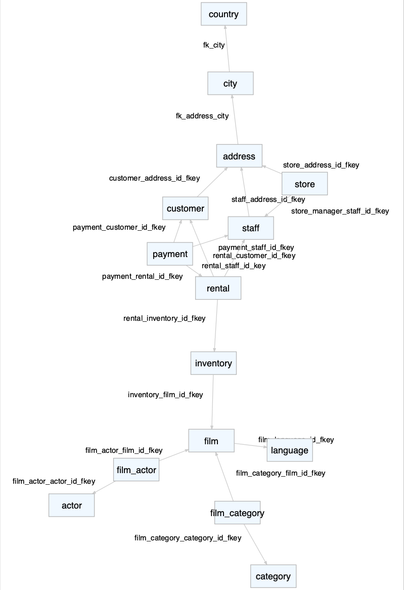

Chapter 14 Drilling into your DBMS environment (22)
This chapter investigates:
- Elements of the database environment
- Differences between a database, a schema, and other objects
- Exercises
The following packages are used in this chapter:
# These packages are called in almost every chapter of the book:
library(tidyverse)
library(DBI)
library(RPostgres)
require(knitr)
library(dbplyr)
library(sqlpetr)
display_rows <- 15 # as a default, show 15 rowsStart up the docker-pet container
Now connect to the dvdrental database with R
con <- sp_get_postgres_connection(
user = Sys.getenv("DEFAULT_POSTGRES_USER_NAME"),
password = Sys.getenv("DEFAULT_POSTGRES_PASSWORD"),
dbname = "dvdrental",
seconds_to_test = 10
)
con## <PqConnection> dvdrental@localhost:543214.1 Which database?
Your DBA will create your user accounts and priviledges for the database(s) that you can access.
One of the challenges when working with a database(s) is finding where your data actually resides. Your best resources will be one or more subject matter experts, SME, and your DBA. Your data may actually reside in multiple databases, e.g., a detail and summary databases. In our tutorial, we focus on the one database, dvdrental. Database names usually reflect something about the data that they contain.
Your laptop is a server for the Docker Postgres databases. A database is a collection of files that Postgres manages in the background.
14.2 How many databases reside in the Docker Container?
rs <-
DBI::dbGetQuery(
con,
"SELECT 'DB Names in Docker' showing
,datname DB
FROM pg_database
WHERE datistemplate = false;
"
)
kable(rs)| showing | db |
|---|---|
| DB Names in Docker | postgres |
| DB Names in Docker | dvdrental |
Which databases are available?
Modify the connection call to connect to the `postgres` database.con <- sp_get_postgres_connection(
user = Sys.getenv("DEFAULT_POSTGRES_USER_NAME"),
password = Sys.getenv("DEFAULT_POSTGRES_PASSWORD"),
dbname = "your code goes here",
seconds_to_test = 10
)
con## [1] "There is no connection"if (con != "There is no connection") {
dbDisconnect(con)
}
# Answer: con <PqConnection> postgres@localhost:5432
# Reconnect to dvdrental
con <- sp_get_postgres_connection(
user = Sys.getenv("DEFAULT_POSTGRES_USER_NAME"),
password = Sys.getenv("DEFAULT_POSTGRES_PASSWORD"),
dbname = "dvdrental",
seconds_to_test = 10
)
con## <PqConnection> dvdrental@localhost:5432Note that the two Sys.getenv function calls work in this tutorial because both the user and password are available in both databases. This is a common practice in organinzations that have implemented single sign on across their organization.
Gotcha:
If one has data in multiple databases or multiple environments, Development,
Integration, and Prodution, it is very easy to connect to the wrong database in
the wrong environment. Always double check your connection information when
logging in and before performing any inserts, updates, or deletes against the
database.The following code block should be used to reduce propagating the above gotcha. Current_database(), CURRENT_DATE or CURRENT_TIMESTAMP, and ‘result set’ are the most useful and last three not so much. Instead of the host IP address having the actual hostname would be a nice addition.
rs1 <-
DBI::dbGetQuery(
con,
"SELECT current_database() DB
,CURRENT_DATE
,CURRENT_TIMESTAMP
,'result set description' showing
,session_user
,inet_server_addr() host
,inet_server_port() port
"
)
kable(rs1)| db | current_date | current_timestamp | showing | session_user | host | port |
|---|---|---|---|---|---|---|
| dvdrental | 2018-11-30 | 2018-11-30 11:46:12 | result set description | postgres | 172.17.0.2 | 5432 |
Since we will only be working in the dvdrental database in this tutorial and reduce the number of output columns shown, only the ‘result set description’ will be used.
14.3 Which Schema?
In the code block below, we look at the information_schema.table which contains information about all the schemas and table/views within our dvdrental database. Databases can have one or more schemas, containers that hold tables or views. Schemas partition the database into big logical blocks of related data. Schema names usually reflect an application or logically related datasets. Occasionally a DBA will set up a new schema and use a users name.
What schemas are in the dvdrental database?
How many entries are in each schema?
## Database Schemas
#
rs1 <-
DBI::dbGetQuery(
con,
"SELECT 'DB Schemas' showing,t.table_catalog DB,t.table_schema,COUNT(*) tbl_vws
FROM information_schema.tables t
GROUP BY t.table_catalog,t.table_schema
"
)
kable(rs1)| showing | db | table_schema | tbl_vws |
|---|---|---|---|
| DB Schemas | dvdrental | pg_catalog | 121 |
| DB Schemas | dvdrental | public | 23 |
| DB Schemas | dvdrental | information_schema | 67 |
We see that there are three schemas. The pg_catalog is the standard PostgreSQL meta data and core schema. Postgres uses this schema to manage the internal workings of the database. DBA’s are the primary users of pg_catalog. We used the pg_catalog schema to answer the question ‘How many databases reside in the Docker Container?’, but normally the data analyst is not interested in analyzing database data.
The information_schema contains ANSI standardized views used across the different SQL vendors, (Oracle, Sysbase, MS SQL Server, IBM DB2, etc). The information_schema contains a plethora of metadata that will help you locate your data tables, understand the relationships between the tables, and write efficient SQL queries.
14.4 Exercises
#
# Add an order by clause to order the output by the table catalog.
rs1 <- DBI::dbGetQuery(con, "SELECT '1. ORDER BY table_catalog' showing
,t.table_catalog DB,t.table_schema,COUNT(*) tbl_vws
FROM information_schema.tables t
GROUP BY t.table_catalog,t.table_schema
")
kable(rs1)| showing | db | table_schema | tbl_vws |
|---|---|---|---|
| 1. ORDER BY table_catalog | dvdrental | pg_catalog | 121 |
| 1. ORDER BY table_catalog | dvdrental | public | 23 |
| 1. ORDER BY table_catalog | dvdrental | information_schema | 67 |
# Add an order by clause to order the output by tbl_vws in descending order.
rs2 <- DBI::dbGetQuery(con, "SELECT '2. ORDER BY tbl_vws desc' showing
,t.table_catalog DB,t.table_schema,COUNT(*) tbl_vws
FROM information_schema.tables t
GROUP BY t.table_catalog,t.table_schema
")
kable(rs2)| showing | db | table_schema | tbl_vws |
|---|---|---|---|
| 2. ORDER BY tbl_vws desc | dvdrental | pg_catalog | 121 |
| 2. ORDER BY tbl_vws desc | dvdrental | public | 23 |
| 2. ORDER BY tbl_vws desc | dvdrental | information_schema | 67 |
# Complete the SQL statement to show everything about all the tables.
rs3 <- DBI::dbGetQuery(con, "SELECT '3. all information_schema tables' showing
,'your code goes here'
FROM information_schema.tables t
")
kable(head(rs3, display_rows))| showing | ?column? |
|---|---|
| 3. all information_schema tables | your code goes here |
| 3. all information_schema tables | your code goes here |
| 3. all information_schema tables | your code goes here |
| 3. all information_schema tables | your code goes here |
| 3. all information_schema tables | your code goes here |
| 3. all information_schema tables | your code goes here |
| 3. all information_schema tables | your code goes here |
| 3. all information_schema tables | your code goes here |
| 3. all information_schema tables | your code goes here |
| 3. all information_schema tables | your code goes here |
| 3. all information_schema tables | your code goes here |
| 3. all information_schema tables | your code goes here |
| 3. all information_schema tables | your code goes here |
| 3. all information_schema tables | your code goes here |
| 3. all information_schema tables | your code goes here |
# Use the results from above to pull interesting columns from just the information_schema
rs4 <- DBI::dbGetQuery(con, "SELECT '4. information_schema.tables' showing
,'your code goes here'
FROM information_schema.tables t
where 'your code goes here' = 'your code goes here'
")
head(rs4, display_rows)## showing ?column?
## 1 4. information_schema.tables your code goes here
## 2 4. information_schema.tables your code goes here
## 3 4. information_schema.tables your code goes here
## 4 4. information_schema.tables your code goes here
## 5 4. information_schema.tables your code goes here
## 6 4. information_schema.tables your code goes here
## 7 4. information_schema.tables your code goes here
## 8 4. information_schema.tables your code goes here
## 9 4. information_schema.tables your code goes here
## 10 4. information_schema.tables your code goes here
## 11 4. information_schema.tables your code goes here
## 12 4. information_schema.tables your code goes here
## 13 4. information_schema.tables your code goes here
## 14 4. information_schema.tables your code goes here
## 15 4. information_schema.tables your code goes here# Modify the SQL below with your interesting column names.
# Update the where clause to return only rows from the information schema and begin with 'tab'
rs5 <- DBI::dbGetQuery(con, "SELECT '5. information_schema.tables' showing
,'your code goes here'
FROM information_schema.tables t
where 'your code goes here' = 'your code goes here'
")
kable(head(rs5, display_rows))| showing | ?column? |
|---|---|
| 5. information_schema.tables | your code goes here |
| 5. information_schema.tables | your code goes here |
| 5. information_schema.tables | your code goes here |
| 5. information_schema.tables | your code goes here |
| 5. information_schema.tables | your code goes here |
| 5. information_schema.tables | your code goes here |
| 5. information_schema.tables | your code goes here |
| 5. information_schema.tables | your code goes here |
| 5. information_schema.tables | your code goes here |
| 5. information_schema.tables | your code goes here |
| 5. information_schema.tables | your code goes here |
| 5. information_schema.tables | your code goes here |
| 5. information_schema.tables | your code goes here |
| 5. information_schema.tables | your code goes here |
| 5. information_schema.tables | your code goes here |
# Modify the SQL below with your interesting column names.
# Update the where clause to return only rows from the information schema and begin with 'col'
rs6 <- DBI::dbGetQuery(con, "SELECT '6. information_schema.tables' showing
,'your code goes here'
FROM information_schema.tables t
where 'your code goes here' = 'your code goes here'
")
kable(head(rs6, display_rows))| showing | ?column? |
|---|---|
| 6. information_schema.tables | your code goes here |
| 6. information_schema.tables | your code goes here |
| 6. information_schema.tables | your code goes here |
| 6. information_schema.tables | your code goes here |
| 6. information_schema.tables | your code goes here |
| 6. information_schema.tables | your code goes here |
| 6. information_schema.tables | your code goes here |
| 6. information_schema.tables | your code goes here |
| 6. information_schema.tables | your code goes here |
| 6. information_schema.tables | your code goes here |
| 6. information_schema.tables | your code goes here |
| 6. information_schema.tables | your code goes here |
| 6. information_schema.tables | your code goes here |
| 6. information_schema.tables | your code goes here |
| 6. information_schema.tables | your code goes here |
In the next exercise we combine both the table and column output from the previous exercises. Review the following code block. The last two lines of the WHERE clause are swithced. Will the result set be the same or different? Execute the code block and review the two datasets.
rs7 <- DBI::dbGetQuery(con, "SELECT '7. information_schema.tables' showing
,table_catalog||'.'||table_schema db_info, table_name, table_type
FROM information_schema.tables t
where table_schema = 'information_schema'
and table_name like 'table%' OR table_name like '%col%'
and table_type = 'VIEW'
")
kable(head(rs7, display_rows))| showing | db_info | table_name | table_type |
|---|---|---|---|
| 7. information_schema.tables | dvdrental.information_schema | collations | VIEW |
| 7. information_schema.tables | dvdrental.information_schema | collation_character_set_applicability | VIEW |
| 7. information_schema.tables | dvdrental.information_schema | column_domain_usage | VIEW |
| 7. information_schema.tables | dvdrental.information_schema | column_privileges | VIEW |
| 7. information_schema.tables | dvdrental.information_schema | column_udt_usage | VIEW |
| 7. information_schema.tables | dvdrental.information_schema | columns | VIEW |
| 7. information_schema.tables | dvdrental.information_schema | constraint_column_usage | VIEW |
| 7. information_schema.tables | dvdrental.information_schema | key_column_usage | VIEW |
| 7. information_schema.tables | dvdrental.information_schema | role_column_grants | VIEW |
| 7. information_schema.tables | dvdrental.information_schema | table_constraints | VIEW |
| 7. information_schema.tables | dvdrental.information_schema | table_privileges | VIEW |
| 7. information_schema.tables | dvdrental.information_schema | tables | VIEW |
| 7. information_schema.tables | dvdrental.information_schema | triggered_update_columns | VIEW |
| 7. information_schema.tables | dvdrental.information_schema | view_column_usage | VIEW |
| 7. information_schema.tables | dvdrental.information_schema | _pg_foreign_table_columns | VIEW |
rs8 <- DBI::dbGetQuery(con, "SELECT '8. information_schema.tables' showing
,table_catalog||'.'||table_schema db_info, table_name, table_type
FROM information_schema.tables t
where table_schema = 'information_schema'
and table_type = 'VIEW'
and table_name like 'table%' OR table_name like '%col%'
")
kable(head(rs8, display_rows))| showing | db_info | table_name | table_type |
|---|---|---|---|
| 8. information_schema.tables | dvdrental.information_schema | column_options | VIEW |
| 8. information_schema.tables | dvdrental.information_schema | _pg_foreign_table_columns | VIEW |
| 8. information_schema.tables | dvdrental.information_schema | view_column_usage | VIEW |
| 8. information_schema.tables | dvdrental.information_schema | triggered_update_columns | VIEW |
| 8. information_schema.tables | dvdrental.information_schema | tables | VIEW |
| 8. information_schema.tables | dvdrental.information_schema | table_privileges | VIEW |
| 8. information_schema.tables | dvdrental.information_schema | table_constraints | VIEW |
| 8. information_schema.tables | dvdrental.information_schema | role_column_grants | VIEW |
| 8. information_schema.tables | dvdrental.information_schema | key_column_usage | VIEW |
| 8. information_schema.tables | dvdrental.information_schema | constraint_column_usage | VIEW |
| 8. information_schema.tables | dvdrental.information_schema | columns | VIEW |
| 8. information_schema.tables | dvdrental.information_schema | column_udt_usage | VIEW |
| 8. information_schema.tables | dvdrental.information_schema | column_privileges | VIEW |
| 8. information_schema.tables | dvdrental.information_schema | column_domain_usage | VIEW |
| 8. information_schema.tables | dvdrental.information_schema | collation_character_set_applicability | VIEW |
| Operator/Element | Associativity | Description |
|---|---|---|
| . | left | table/column name separator |
| :: | left | PostgreSQL-style typecast |
| [ ] | left | array element selection |
| - | right | unary minus |
| ^ | left | exponentiation |
| * / % | left | multiplication, division, modulo |
| + - | left | addition, subtraction |
| IS | IS TRUE, IS FALSE, IS UNKNOWN, IS NULL | |
| ISNULL | test for null | |
| NOTNULL | test for not null | |
| (any other) | left | all other native and user-defined operators |
| IN | set membership | |
| BETWEEN | range containment | |
| OVERLAPS | time interval overlap | |
| LIKE ILIKE SIMILAR | string pattern matching | |
| < > | less than, greater than | |
| = | right | equality, assignment |
| NOT | right | logical negation |
| AND | left | logical conjunction |
| OR | left | logical disjunction |
rs1 <- DBI::dbGetQuery(con, "SELECT t.table_catalog DB ,t.table_schema
,t.table_name,t.table_type
FROM information_schema.tables t")
rs2 <- DBI::dbGetQuery(con, "SELECT t.table_catalog DB ,t.table_schema
,t.table_type,COUNT(*) tbls
FROM information_schema.tables t
group by t.table_catalog ,t.table_schema
,t.table_type
")
rs3 <- DBI::dbGetQuery(con, "SELECT distinct t.table_catalog DB ,t.table_schema
,t.table_type tbls
FROM information_schema.tables t
")
# kable(head(rs1 %>% arrange (table_name)))
# View(rs1)
# View(rs2)
# View(rs3)
kable(head(rs1))| db | table_schema | table_name | table_type |
|---|---|---|---|
| dvdrental | public | actor_info | VIEW |
| dvdrental | public | customer_list | VIEW |
| dvdrental | public | film_list | VIEW |
| dvdrental | public | nicer_but_slower_film_list | VIEW |
| dvdrental | public | sales_by_film_category | VIEW |
| dvdrental | public | staff | BASE TABLE |
| db | table_schema | table_type | tbls |
|---|---|---|---|
| dvdrental | information_schema | BASE TABLE | 7 |
| dvdrental | information_schema | VIEW | 60 |
| dvdrental | pg_catalog | BASE TABLE | 62 |
| dvdrental | public | BASE TABLE | 16 |
| dvdrental | public | VIEW | 7 |
| dvdrental | pg_catalog | VIEW | 59 |
| db | table_schema | tbls |
|---|---|---|
| dvdrental | information_schema | BASE TABLE |
| dvdrental | information_schema | VIEW |
| dvdrental | pg_catalog | BASE TABLE |
| dvdrental | public | BASE TABLE |
| dvdrental | public | VIEW |
| dvdrental | pg_catalog | VIEW |
www.dataquest.io/blog/postgres-internals
Comment on the practice of putting a comma at the beginning of a line in SQL code.
## Explain a `dplyr::join
tbl_pk_fk_df <- DBI::dbGetQuery(
con,
"
SELECT --t.table_catalog,t.table_schema,
c.table_name
,kcu.column_name
,c.constraint_name
,c.constraint_type
,coalesce(c2.table_name, '') ref_table
,coalesce(kcu2.column_name, '') ref_table_col
FROM information_schema.tables t
LEFT JOIN information_schema.table_constraints c
ON t.table_catalog = c.table_catalog
AND t.table_schema = c.table_schema
AND t.table_name = c.table_name
LEFT JOIN information_schema.key_column_usage kcu
ON c.constraint_schema = kcu.constraint_schema
AND c.constraint_name = kcu.constraint_name
LEFT JOIN information_schema.referential_constraints rc
ON c.constraint_schema = rc.constraint_schema
AND c.constraint_name = rc.constraint_name
LEFT JOIN information_schema.table_constraints c2
ON rc.unique_constraint_schema = c2.constraint_schema
AND rc.unique_constraint_name = c2.constraint_name
LEFT JOIN information_schema.key_column_usage kcu2
ON c2.constraint_schema = kcu2.constraint_schema
AND c2.constraint_name = kcu2.constraint_name
AND kcu.ordinal_position = kcu2.ordinal_position
WHERE c.constraint_type IN ('PRIMARY KEY', 'FOREIGN KEY')
AND c.table_catalog = 'dvdrental'
AND c.table_schema = 'public'
ORDER BY c.table_name;
"
)
# View(tbl_pk_fk_df)
tables_df <- tbl_pk_fk_df %>% distinct(table_name)
# View(tables_df)library(DiagrammeR)
table_nodes_ndf <- create_node_df(
n <- nrow(tables_df)
, type <- "table"
, label <- tables_df$table_name
,
shape = "rectangle"
, width = 1
, height = .5
, fontsize = 18
)
tbl_pk_fk_ids_df <- inner_join(tbl_pk_fk_df, table_nodes_ndf
,
by = c("table_name" = "label")
, suffix(c("st", "s"))
) %>%
rename("src_tbl_id" = id) %>%
left_join(table_nodes_ndf
,
by = c("ref_table" = "label")
, suffix(c("st", "t"))
) %>%
rename("fk_tbl_id" = id)
tbl_fk_df <- tbl_pk_fk_ids_df %>% filter(constraint_type == "FOREIGN KEY")
tbl_pk_df <- tbl_pk_fk_ids_df %>% filter(constraint_type == "PRIMARY KEY")
# View(tbl_pk_fk_ids_df)
# View(tbl_fk_df)
# View(tbl_pk_df)
kable(head(tbl_fk_df))| table_name | column_name | constraint_name | constraint_type | ref_table | ref_table_col | src_tbl_id | type.x | shape.x | width.x | height.x | fontsize.x | fk_tbl_id | type.y | shape.y | width.y | height.y | fontsize.y |
|---|---|---|---|---|---|---|---|---|---|---|---|---|---|---|---|---|---|
| address | city_id | fk_address_city | FOREIGN KEY | city | city_id | 2 | table | rectangle | 1 | 0.5 | 18 | 4 | table | rectangle | 1 | 0.5 | 18 |
| city | country_id | fk_city | FOREIGN KEY | country | country_id | 4 | table | rectangle | 1 | 0.5 | 18 | 5 | table | rectangle | 1 | 0.5 | 18 |
| customer | address_id | customer_address_id_fkey | FOREIGN KEY | address | address_id | 6 | table | rectangle | 1 | 0.5 | 18 | 2 | table | rectangle | 1 | 0.5 | 18 |
| film | language_id | film_language_id_fkey | FOREIGN KEY | language | language_id | 7 | table | rectangle | 1 | 0.5 | 18 | 11 | table | rectangle | 1 | 0.5 | 18 |
| film_actor | actor_id | film_actor_actor_id_fkey | FOREIGN KEY | actor | actor_id | 8 | table | rectangle | 1 | 0.5 | 18 | 1 | table | rectangle | 1 | 0.5 | 18 |
| film_actor | film_id | film_actor_film_id_fkey | FOREIGN KEY | film | film_id | 8 | table | rectangle | 1 | 0.5 | 18 | 7 | table | rectangle | 1 | 0.5 | 18 |
| table_name | column_name | constraint_name | constraint_type | ref_table | ref_table_col | src_tbl_id | type.x | shape.x | width.x | height.x | fontsize.x | fk_tbl_id | type.y | shape.y | width.y | height.y | fontsize.y |
|---|---|---|---|---|---|---|---|---|---|---|---|---|---|---|---|---|---|
| actor | actor_id | actor_pkey | PRIMARY KEY | 1 | table | rectangle | 1 | 0.5 | 18 | NA | NA | NA | NA | NA | NA | ||
| address | address_id | address_pkey | PRIMARY KEY | 2 | table | rectangle | 1 | 0.5 | 18 | NA | NA | NA | NA | NA | NA | ||
| category | category_id | category_pkey | PRIMARY KEY | 3 | table | rectangle | 1 | 0.5 | 18 | NA | NA | NA | NA | NA | NA | ||
| city | city_id | city_pkey | PRIMARY KEY | 4 | table | rectangle | 1 | 0.5 | 18 | NA | NA | NA | NA | NA | NA | ||
| country | country_id | country_pkey | PRIMARY KEY | 5 | table | rectangle | 1 | 0.5 | 18 | NA | NA | NA | NA | NA | NA | ||
| customer | customer_id | customer_pkey | PRIMARY KEY | 6 | table | rectangle | 1 | 0.5 | 18 | NA | NA | NA | NA | NA | NA |
# Create an edge data frame, edf
fk_edf <-
create_edge_df(
from = tbl_fk_df$src_tbl_id,
to = tbl_fk_df$fk_tbl_id,
rel = "fk",
label = tbl_fk_df$constraint_name,
fontsize = 15
)
# View(fk_edf)fkgraph_widget <-
create_graph(
nodes_df = table_nodes_ndf,
edges_df = fk_edf,
graph_name = "Simple FK Graph"
) %>%
render_graph()
# export to image files
fkgraph_file <- sqlpetr::sp_make_image_files(
fkgraph_widget,
"diagrams",
"fkgraph"
)